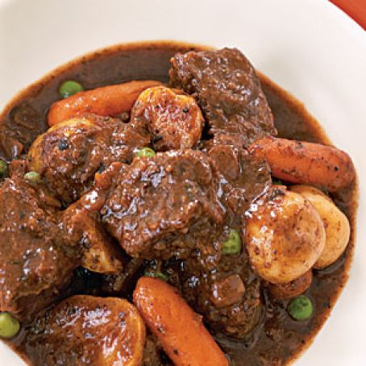

Beef Stew

A beef stew like grandma used to make
This recipe here will show you how to make
a delicious beef stew. It's simple and easy,
yet rewarding and filling. It only takes a few
ingredients and it's ready to start. By far,
one of the easiest meals to make. Enjoy!
Ingredients
- 3 tbsp olive oil
- 2 lbs chuck beef
- 1 medium onion
- 2 garlic cloves
- 8oz mushrooms
- 1/2 tsp thyme
- 1/2 tsp oregano
- 2 tsp paprika
- 2 tsp salt
- 1/2 tsp black pepper
- 3 ribs celery
- 1 lb baby carrots
- 2 cups baby red potatoes
- 1 cup red wine
- 2 cups chicken stock
- 2 tbsp butter softened
- 2 tbsp flour
Steps
-
Cut the beef into 2-inch chunks. Then add
olive oil into a Dutch oven pot. Bring the
heat to high. Once the oill is nearly
smoking, add the beef chunks into the pot.
Evenly brown each side of the beef chunks.
Then remove from the pot.
-
Place the chopped onion and minced garlic
into the pot and stir over medium high
heat until the onion becomes translucent.
-
Add the mushrooms and stir until they become
tender.
-
Then add 1/2 tsp thyme, 1/2 tsp oregano, 2 tsp
paprika, 2 tsp salt , and 1/2 tsp black pepper.
Stir and cook for about 2 minutes.
-
Place the celery, baby carrots, and baby red
potatoes into the pot, then place the browned
beef chunks on top. Give them a quick stir.
-
Pour in the red wine and chicken stock.
-
Place the lid over the pot and bring it to a
boil. Remove from the cook top and place it
into a 320 Fahrenheit degree oven for 1 hour.
- Meanwhile, with a fork combined 2 tbsp
softened butter with 2 tbsp flour.
-
After the beef has cooked for 1 hour,
place the butter and flour mixture into the
pot and cook for an additional hour with the
lid back on. This butter and flour mixture
will thicken the beef stew liquids.